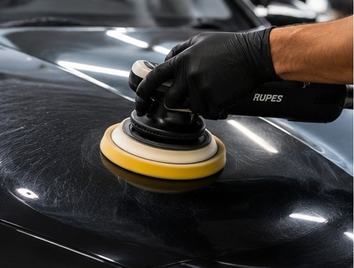

Découvrez aussi
Nos autres services
MathClean prend soin de toutes vos surfaces à Paris et en Île-de-France. Explorez l'ensemble de nos prestations de nettoyage.
Un detailing automobile haut de gamme, à domicile, partout en Île-de-France. Intérieur comme extérieur, votre véhicule retrouve son éclat.

Carrosserie lustrée, habitacle aspiré, plastiques nourris : regardez la brillance revenir.
Le polissage est l'étape qui transforme une carrosserie propre en carrosserie éclatante. Avec le temps, les lavages successifs, les frottements et les intempéries créent une multitude de micro-rayures et de tourbillons (swirls) qui ternissent la peinture et cassent les reflets. Notre polissage corrige ces défauts en profondeur pour redonner à votre véhicule une brillance profonde, digne d'une sortie de concession.
Nous travaillons à la polisseuse orbitale professionnelle, avec des mousses et des abrasifs adaptés à la dureté de votre vernis. Chaque panneau est traité méthodiquement, par passes successives : décontamination de la peinture, correction des défauts, puis lustrage de finition. Le résultat est un effet miroir homogène sur l'ensemble de la carrosserie.
Le polissage est particulièrement recommandé avant une revente ou une restitution de leasing (il valorise immédiatement le véhicule), après un hiver difficile, sur une peinture noire ou foncée qui marque facilement, ou simplement lorsque la carrosserie a perdu son éclat malgré des lavages réguliers. Il s'intègre aussi dans notre formule sortie de concession, qui combine nettoyage intérieur, extérieur et polissage.
Polissage carrosserie — réduction des micro-rayures et ravivage de la brillance sur l'ensemble des panneaux. Précision & détail — travail minutieux autour des optiques, des poignées, des bas de caisse et des jonctions, pour un rendu parfait jusque dans les moindres recoins. Finition premium — lustrage final pour un éclat profond et une finition miroir durable.
Le polissage démarre à 350 € et dépend de la taille du véhicule, de l'état de la peinture et du niveau de correction souhaité. Après un premier échange (photos ou visite), nous établissons un devis gratuit et transparent. L'intervention se déroule à domicile ou sur votre lieu de travail, partout à Paris et en Île-de-France, avec notre propre matériel.
Nous intervenons dans tout Paris (75) et l'ensemble de l'Île-de-France : Hauts-de-Seine (92), Seine-Saint-Denis (93), Essonne (91), Yvelines (78), Seine-et-Marne (77), Val-de-Marne (94) et Val-d'Oise (95). Le déplacement est gratuit, 7j/7.
Faire appel à l'équipe MathClean sur Paris et dans les départements de la région parisienne, c'est la garantie d'un travail soigné et qualifié, pour tout type de nettoyage en Île-de-France.
Contactez un représentant MathClean pour obtenir votre devis gratuit dans les meilleurs délais.
📞 06 23 07 52 59MathClean prend soin de toutes vos surfaces à Paris et en Île-de-France. Explorez l'ensemble de nos prestations de nettoyage.